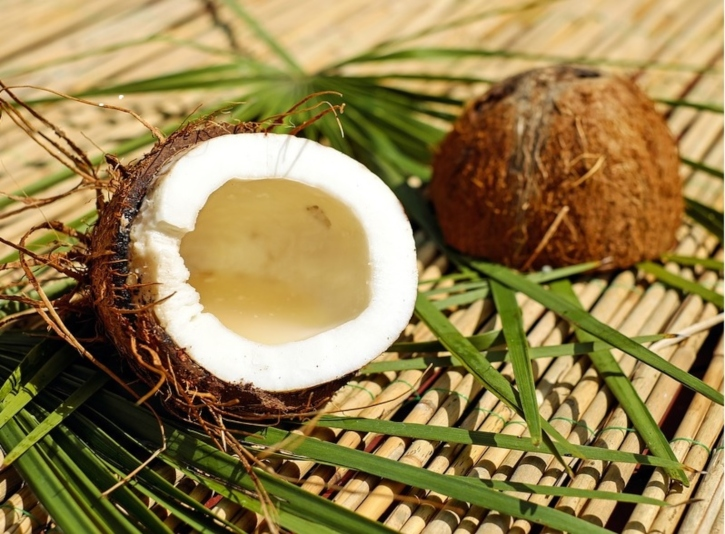

Goji berry
Since the early 21st century, the dried fruit has been marketed in the
Western world as a health food, amidst scientifically unsupported
claims regarding such benefits. In the wake of those claims, dried and
fresh goji berries were included in many snack foods and food
supplements, such as granola bars, yogurt, tea blends, fruit juices
and juice concentrates, whole fruit purées, and dried pulp flour.
Chia seed
Dried chia seeds contain 6% water, 42% carbohydrates, 16% protein, and
31% fat. In a 100-gram amount, chia seeds are a rich source (20% or
more of the Daily Value, DV) of the B vitamins, thiamin and niacin
(54% and 59% DV, respectively), and a moderate source of riboflavin
(14% DV) and folate (12% DV). Several dietary minerals are in rich
content, including calcium, iron, magnesium, manganese, phosphorus,
and zinc (all more than 20% DV; see table).The fatty acids of chia seed
oil are mainly unsaturated, with linoleic acid (17–26% of total fat)
and linolenic acid (50–57%) as the major fats.

Blueberries
Blueberries consist of 14% carbohydrates, 0.7% protein, 0.3% fat and
84% water. They contain only negligible amounts of
micronutrients, with moderate levels (relative to respective Daily
Values) (DV) of the essential dietary mineral manganese, vitamin C,
vitamin K and dietary fiber. Generally, nutrient contents
of blueberries are a low percentage of the DV. One serving
provides a relatively low caloric value of 57 kcal per 100 g serving
and glycemic load score of 6 out of 100 per day.

Avocado
Blueberries consist of 14% carbohydrates, 0.7% protein, 0.3% fat and
84% water . They contain only negligible amounts of
micronutrients, with moderate levels (relative to respective Daily
Values) (DV) of the essential dietary mineral manganese, vitamin C,
vitamin K and dietary fiber. Generally, nutrient contents
of blueberries are a low percentage of the DV . One serving
provides a relatively low caloric value of 57 kcal per 100 g serving
and glycemic load score of 6 out of 100 per day.

Mango
The energy value per 100 g (3.5 oz) serving of the common mango is
250 kJ (60 kcal), and that of the apple mango is slightly higher
(330 kJ (79 kcal) per 100 g). Fresh mango contains a variety of
nutrients (right table), but only vitamin C and folate are in
significant amounts of the Daily Value as 44% and 11%, respectively.
Numerous phytochemicals are present in mango peel and pulp, such as
the triterpene, lupeol which is under basic research for its potential
Mango peel pigments under study include carotenoids, such as the
biological effects.
provitamin A compound, beta-carotene, lutein and alpha-carotene,
and polyphenols, such as quercetin, kaempferol, gallic acid, caffeic
acid, catechins and tannins. Mango contains a unique xanthonoid called
mangiferin.

Coconut
Per 100-gram serving with 354 calories, raw coconut meat supplies a
high amount of total fat (33 grams), especially saturated fat (89% of
total fat), moderate content of carbohydrates (15 grams), and protein
(3 grams). Micronutrients in significant content (more than 10% of the
Daily Value) include the dietary minerals, manganese, copper, iron,
phosphorus, selenium, and zinc .
Strawberry
One serving (100 g; see Table) of strawberries contains approximately 33
kilocalories, is an excellent source of vitamin C, a good source of
manganese, and provides several other vitamins and dietary minerals in
lesser amounts. Strawberries contain a modest amount of essential
unsaturated fatty acids in the achene (seed) oil. Garden strawberries
contain the dimeric ellagitannin agrimoniin which is an isomer of
sanguiin H-6. Other polyphenols present include flavonoids, such as
anthocyanins, flavanols, flavonols and phenolic acids, such as
hydroxybenzoic acid and hydroxycinnamic acid. Strawberries contain
fisetin and possess higher levels of this flavonoid than other fruits.
Brown rice
Brown rice and white rice have similar amounts of calories and
carbohydrates. Brown rice is a whole grain and a good source of
magnesium, phosphorus, selenium, thiamine, niacin, vitamin B6, and
manganese, and is high in fiber. White rice, unlike brown rice, has the
bran and germ removed, and therefore has different nutritional content.
Several vitamins and dietary minerals are lost in this removal and the
subsequent polishing process. Among these are: oil in the bran, which is
removed along with the bran layer, dietary fiber, small amounts of fatty
acids, and magnesium. A part of these missing nutrients, such as vitamins
B1 and B3, and iron, are sometimes added back into the white rice.
Oat
Oats are generally considered healthful due to their rich content of
several essential nutrients. In a 100 gram serving, oats provide
389 kilocalories (1,630 kJ) and are an excellent source (20% or more of
the Daily Value, DV) of protein (34% DV), dietary fiber (44% DV), several
B vitamins and numerous dietary minerals, especially manganese (233% DV).
Oats are 66% carbohydrates, including 11% dietary fiber and 4%
beta-glucans, 7% fat and 17% protein.
The established property of their cholesterol-lowering effects has led to
acceptance of oats as a health food.
Almonds
Almonds are 4% water, 22% carbohydrates, 21% protein, and 50% fat. In a
100 gram reference amount, almonds supply 579 calories. The almond is a
nutritionally dense food, providing a rich source (20% or more of the
Daily Value, DV) of the B vitamins riboflavin and niacin, vitamin E, and
the essential minerals calcium, copper, iron, magnesium, manganese,
phosphorus, and zinc. Almonds are a moderate source (10–19% DV) of the B
vitamins thiamine, vitamin B6, and folate, choline, and the essential
mineral potassium. They also contain substantial dietary fiber, the
monounsaturated fat, oleic acid, and the polyunsaturated fat, linoleic
acid. Typical of nuts and seeds, almonds are a source of phytosterols such
as beta-sitosterol, stigmasterol, campesterol, sitostanol, and campestanol.